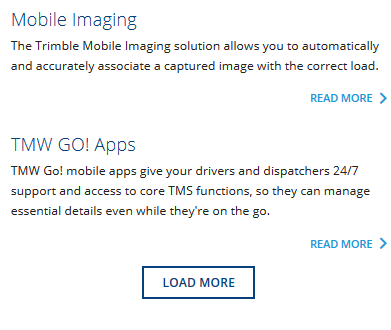

Entity Reference Ajax Formatter provides a new configurable field formatter for entity reference fields. This formatter lets you select how many entities to render as well as providing some extra sorting options for display only. However the standout feature is an AJAX enabled Load More link. This lets you initially load say 3 references and then if the user wants to see more, click the link and display more inline. 
The widget has the same option of selecting the desired view mode to render the entities with and provides 4 extra settings:
Number(6): Number of entities to render to start with.Sort (Default): Provides a few extra sorting options that only affects this view mode.Load More (FALSE): Provide an AJAX link to load more referenced entities.Max (0): Maximum number to render. 0 is all entities referenced by the field. (Only visible if Load More is selected.)Drupal 8 is required, Drupal 8.6.x or higher is suggested - automatic tests only on Drupal 8.6+, manually tested on 8.5.x.
Install as you would normally install a contributed Drupal module. See the install docs if required in the Drupal documentation for further information.
Configuration can be set as normal for field formatters through the Field UI for example, for a entity reference feild on the article node type, that would be on /admin/structure/types/manage/article/form-display.
Primarily developed as part of a North Studios project - thanks for the permission to release this back to the community. Major thanks to the rest of my team for code review, feedback and discussion.
Any questions? Ask away on the issue queue or contact the maintainer Nick Wilde.